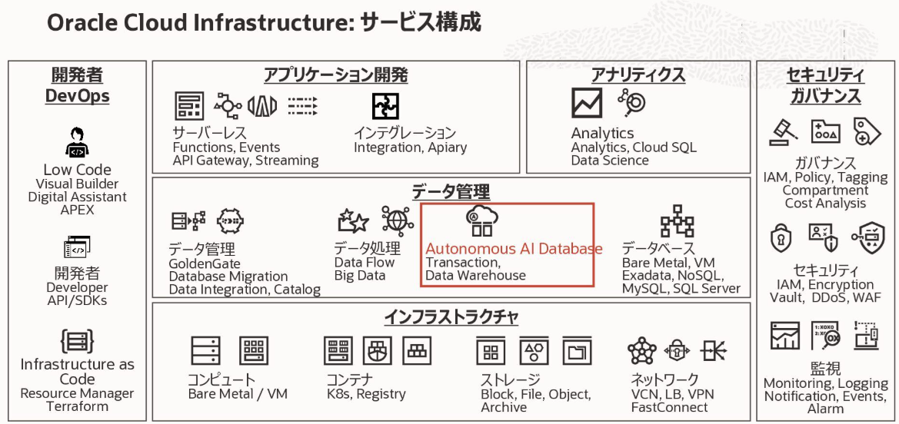

トップページ
作成日：2026/02/23 08:26:45
更新日：2026/05/23 15:50:35
OCI資格情報(OCI-DFA-2025)
分類01:OCI資格概要
資格名(2025)
- 試験番号: 1Z0-1195(1Z0-1195-25)
- Oracle Data Platform 2025 Foundations Associate
Oracle社公式サイト
試験内容チェックリスト
- データ管理の概要
- Autonomous Databaseとツール
- ExadataおよびDBCS
- 試験内容チェックリスト
試験コース
- 試験コース
- 分類01:OCI資格概要
- 分類02:データ管理の概要
- 分類03:OCI-OracleDB
- 01:Oracle Autonomous AI Database(Autonomous Database)
- 02:Exadata
- 03:Oracle Base Database Service(Oracle Database Cloud Serivce)
- 分類04:その他DB
- 分類05:コンバージド・データベース
- 01:コンバージド・データベース
- 02:Oracle JSON
- 03:グラフデータベース
- 04:Spatial Database
- 分類06:レジリエンシ
- 01:Oracle Maximum Availability Architecture (Oracle
MAA:最大可用性アーキテクチャ)
- 02:Oracle Maximum Security Architecture(Oracle
MSA:最大セキュリティ・アーキテクチャ)
- 分類07:開発
- 01:Oracle APEX
- 02:REST-API
- 03:Oracleデータ・ツールセット
- 分類08:データ・レイク
- 01:データ・ウェアハウス
- 02:データ・レイク
- 03:機械学習
- 04:データ・メッシュ
- 分類09:アップグレードと移行
- 分類10:その他OCIサービス
- 01:Oracle Database Management
- 02:OCI Data Integration
- 03:リソースマネージャー
- 04:モニタリング
- 分類99:その他
勉強メモ
OCIアーキテクチャ
分類02:データ管理の概要
OCIサービス/概要
OCIサービス/構成図
(OCIサービス構成図)

ネットワークアーキテクチャ
共同責任モデル
Oracle Autonomous
AI Database/サードパーティ
分類03:OCI-OracleDB
Oracle Database@Azure
Oracle Database@Google
Oracle Database@AWS
Oracle AI
Database(Oracle Databaseサービス)
分類02:データ管理の概要
Oracle AI
Database構成種別(デプロイメント)
- Oracle AI Database構成種別(デプロイメント)
- Autonomous Database(ADB)
- Autonomous Database Dedicated(ADB-D/専有型)
- Autonomous Database Serverless(ADB-S/共有型)
- Exadata Database Service
- Oracle Exadata Database Service on Dedicated
Infrastructure(ExaDB-D)
- Oracle Exadata Database Service on Exascale
Infrastructure(ExaDB-XS)
- Base Database Service
- Oracle
Cloud Infrastructure 上で利用可能なOracle
Databaseのサービスの比較
Oracle AI
Database管理範囲(共同責任モデル)
- ExaDataを含めた管理範囲
- Oracle AI Database管理範囲
Oracle
Autonomous AI Database/DB機能種別(ワークロード)
分類03:OCI-OracleDB
DB機能種別(ワークロード)
- Oracle Autonomous Database
- Oracle Autonomous AI Transaction Processing (ATP)
- Oracle Autonomous AI Lakehouse
- (Autonomous Data Warehouse (ADW))
- Autonomous JSON Database (AJD)
Oracle Autonomous AI
Lakehouse
Autonomous AI Database
各機能
分類03:OCI-OracleDB
Autonomous AI Database
各機能
Exadata Database Service
分類03:OCI-OracleDB
Oracle Exadata Database
Service
Oracle
Exadata Database Service on Dedicated Infrastructure（ExaDB-D）
Exadata Database Service on Dedicated
Infrastructure（ExaDB-D）は、ミッションクリティカルな基盤で圧倒的な実績を誇るExadataの専有環境を、
OCI上においてサブスクリプションで利用できるサービスです。
Oracle
Exadata Database Service on Exascale Infrastructure(ExaDB-XS)
ExaDB-XS（Exadata Database Service on Exascale
Infrastructure）とは、OCI上でExadataが使えるインフラ共有型のデータベースサービスです。
Exadata Cloud@Customer
Oracle Exadata
Cloud@Customerは、エンタープライズ・データ・センター(顧客データセンター)でExadata
Database Serviceを稼働させることが可能となります。
OCI Exadataにおける責任分担
- オラクルが責任を持つ範囲（インフラ管理）
- Oracleは、サービスの基盤となるインフラストラクチャの可用性とセキュリティを維持する責任があります。
- 物理ハードウェア、インフラの保守: サーバー、ストレージ（Exadata
Storage
Server）、ネットワークスイッチの物理的な保守・修理・交換。。
- ストレージ・サーバー:
ストレージ・ソフトウェアのアップデートおよびディスク障害への対応。
- ハイパーバイザ:
VMを実行するための仮想化基盤の管理とセキュリティ確保。
- インフラのアップデート:
ストレージ・サーバーのソフトウェアや、ネットワーク機器の定期的なセキュリティ・スキャンおよびアップデート。
- 物理的セキュリティ:
データセンター自体のセキュリティ対策（OCIの場合)
- お客様が責任を持つ範囲（データベース・VM管理）
- プロビジョニングされたリソースの構成、セキュリティ、および運用に責任を持ちます。お客様は、提供されたリソースを使用して、実際の業務データを安全に運用する責任を負います。
- 仮想マシン（VM）の管理:
VM内のゲストOS設定・管理、セキュリティ・パッチの適用、およびカスタム・ソフトウェアの管理、VM内へのアクセス制御。
- データベース（CDB/PDB）: Oracle
Databaseのインストール（プロビジョニング/データベース作成）、パッチ適用、バックアップ、リカバリ、およびパフォーマンス・チューニング。
- データ保護と暗号化:
データ自体の保護、表領域の暗号化（TDE）や透過的データ暗号化の暗号化キー管理。
- IDおよびアクセス管理: IAM（Identity and Access
Management）ポリシーによる、サービスへのアクセス権限の定義と運用。
- ネットワーク・セキュリティ:
セキュリティ・リストやネットワーク・セキュリティ・グループ（NSG）を使用したアクセス制御の設定。
- 監査とモニタリング
- ロギング:
オラクルはインフラ側のログを管理し、お客様はVMやデータベース、OCIサービス操作の監査ログを管理する役割を分担します。
- モデル別の特徴
- 利用形態によって、一部の責任範囲が異なります。
- Dedicated Infrastructure (ExaDB-D):
OCI上の専用筐体を利用。物理インフラはすべてOracleがOCIリージョン内で管理します。
- Cloud@Customer (ExaDB-C@C):
お客様のデータセンターに機材を設置。物理的な設置場所や電源・空調、ネットワーク配線などの物理環境の準備はユーザーの責任となります。
- 責任
Oracle Operator Access
Control
Oracle Operator Access Controlは、Oracle
CloudのExadataインフラストラクチャに対して、Oracleの技術者がメンテナンス目的で行うアクセス（SSHなど）を、
顧客が可視化・制御・監査できるセキュリティ機能です。
この機能は、専用Exadataインフラストラクチャ(ExaDB-D)上のAutonomous
DatabaseやExadata Cloud@Customerで、追加費用なしで利用できます。
Oracle Operator Access
Controlを使用すると、Exadataインフラストラクチャ、Oracle Autonomous
DatabaseをExadata
Cloud@Customer上でホストするExadataインフラストラクチャ、
およびOracleによって管理されるAutonomous Exadata VMクラスタ(Exadata
Cloud@Customer上のOracle Autonomous
Databaseにデプロイされたクライアント仮想マシン)に対する、
Oracleのアクセス権の付与、監査および取消を行うことができます。
- 主な機能と特徴:
- アクセスの管理と制御:
Oracleのオペレータによるアクセスを制限・許可し、承認された作業のみを実行可能にします。
- リアルタイム監視と監査:
オペレータが実行するコマンドやキーストロークを監視し、記録します。
- アクセスの制限: アクセスできる期間、コンポーネント、コマンド（cat,
grep, topなど）を細かく制限可能です。
- 承認ワークフロー:
重要な操作（INFRA_UPDATE_RESTART）に対し、アクセス申請と承認のプロセスを設定できます。
- セキュリティ強化:
一時的な資格情報（credentials）を使用し、作業完了後に権限が削除されます。
- Oracle
Operator Access Controlの概要
Oracle
Base Database Service(Oracle Database Cloud Serivce)
分類03:OCI-OracleDB
Oracle Base Database
Service/概要
MySQL
分類04:その他DB
MySQL HeatWave Database
NoSQL Database Cloud Service
分類04:その他DB
NoSQL Database Cloud
Service/概要
NoSQLを実行するためのOCI-CLIコマンド
コンバージド・データベース(Converged
Database)
分類05:コンバージド・データベース
概要
種別
Oracle JSON
分類05:コンバージド・データベース
Oracle JSON/概要
JSONコレクション
- 特徴
- 表ではなく、JSONコレクション
- MongoDBコレクションとして利用可能
- 対応表
- データベース - スキーマ
- コレクション - 表
- ドキュメント - 行
- フィルタ - 問い合わせ
グラフデータベース(Graph
Database)
分類05:コンバージド・データベース
グラフデータベース/概要
Spatial Database
分類05:コンバージド・データベース
Spatial Database/概要
Oracle
Maximum Availability Architecture(OracleMAA)
分類06:レジリエンシ
Oracle MAA
Oracle
MAAリファレンス・アーキテクチャ
Oracle Maximum
Security Architecture(OracleMSA)
分類06:レジリエンシ
Oracle MSA概要
Oracle Application
Express(Oracle APEX)
分類07:開発
Oracle APEX
Salesforce Apex言語
Oracle APEX Administration
Services
Oracle REST API
分類07:開発
Oracle REST Data
Services(ORDS)
Oracleデータ・ツールセット(OCI-GUI)
分類07:開発
データ・ウェアハウス(レイクハウス)
分類08:データ・レイク
データ・ウェアハウス概要
データ・レイク概要
OCIにおけるデータウェアハウスとデータレイクの比較
OCIのデータウェアハウス（ADW等）とデータレイク（Object
Storage等）の最大の違いは「データの構造」と「目的」です。
ウェアハウスは整形済みの構造化データを高速分析する「倉庫」で、レイクはRAWデータをそのまま保存し柔軟に機械学習などに使う「湖」です。
| 項目 |
データウェアハウス (Oracle Autonomous Data Warehouse - ADW) |
データレイク (Object Storage + Big Data Service) |
| OCIサービス |
Autonomous Data Warehouse (ADW) |
Object Storage, Big Data Service |
| 特性 |
高いクエリパフォーマンス、データ品質 |
高い柔軟性、低コスト、大規模保存 |
| 主な用途 |
BI、経営レポート、定型的な高速分析 |
AI/機械学習、非定型分析、ビッグデータ処理 |
| データ構造 |
構造化データ（表形式） |
非構造化、半構造化、構造化データ（あらゆる形式） |
| 処理方式 |
ETL/ELTで事前加工 |
生データのまま格納 (Raw Data) |
| 主な利用者 |
ビジネスアナリスト、データアナリスト |
データサイエンティスト、データエンジニア |
OCIでの「データレイクハウス」
最近のOCIでは、これら2つのいいとこ取りをした「データレイクハウス」アプローチが推奨されています。
これは、Object Storageで低コストにデータを蓄積しつつ、Autonomous
DatabaseやBig Data
Serviceを用いて、それらのデータを高速かつ直接的に分析する手法です。
使い分けの指針：定型レポートが必要なら「ウェアハウス」、データサイエンス目的や将来的な活用を想定するなら「レイク」から開始し、
最終的には「レイクハウス」を目指すのが効率的です。
機械学習(Oracle Machine
Learning/ML)
分類08:データ・レイク
機械学習概要
Oracle Machine
Learning/ライフ・サイクル
Oracle Machine
Learning/構成要素
Oracle Machine
Learning/AutoML
OCI Data Science Service
OCI Data Labeling
データ・メッシュ
分類08:データ・レイク
OCIデータメッシュ
サービス・メッシュ
データメッシュ/一般
アップグレード
分類09:アップグレードと移行
Oracle Database Management
分類10:その他OCIサービス
OCI Database Management/概要
分類10:その他OCIサービス